Introduction
In this article series, we will be learning about the tools and techniques required to perform penetration testing and Vulnerability assessment on IOS Applications.
Jailbreaking your device
If you are serious about IOS security, then having a jailbroken device is a must. In this section, we will look at how we can jailbreak an IOS device. Jailbreaking a device has many advantages. You can install tools like nmap, metasploit and even run your own custom python code on the device. Imagine having the power to run a vulnerability scan on a website from the palm of your hand. To know more about jailbreaking and the advantages of doing it, i recommend you have a look at this article.
Jailbreaking your device is as simple as downloading a jailbreaking software and clicking on jailbreak. I would recommend you use evasi0n to jailbreak if your device if your device is running IOS 6.x and redsn0w if your device is running IOS 5.x.
In this case, i am going to jailbreak my new Ipad (3rd generation) running IOS 6.0.1. Once you download evasi0n and run it, you will see that it automatically detects the device and tells you if a jailbreak is available for it or not.
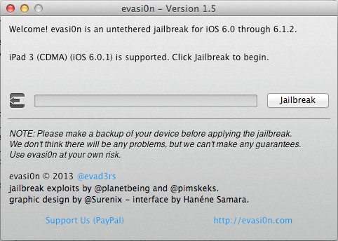
All you have to do is click on Jailbreak and let evasi0n do all the magic.
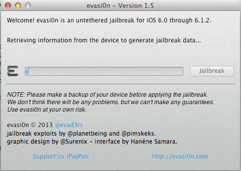
As you can see, the jailbreak process has started. After some time, evasi0n will reboot the device and run the exploit.
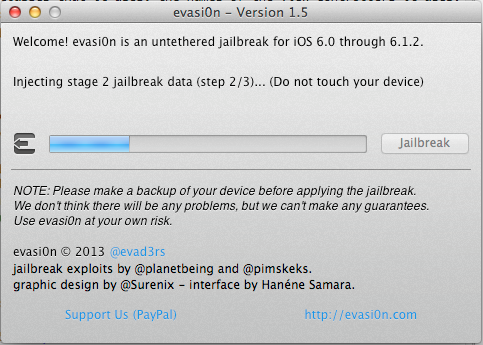
Once it is done running the exploit, it will install Cydia and its packages list on the device. Cydia is a GUI that allows you to download software packages and other apps on your jailbroken device that you would normally not find on the App store. Mostly all the jailbreak softwares install Cydia on your device by default. You can call Cydia the App Store for jailbroken devices.
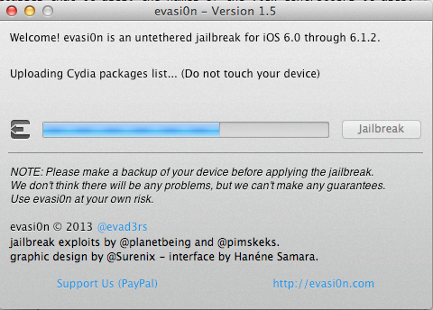
Wait for some more time until you get this prompt
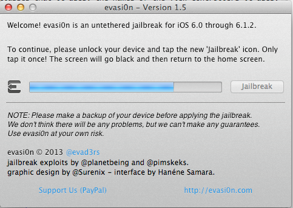
If you go to your device, you will see that a new app icon named Jailbreak has come up. Tap on it to finish the jailbreak process.
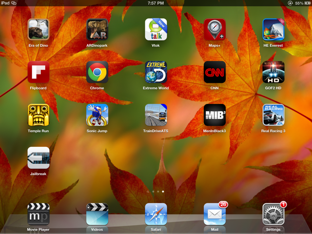
You will see that your device will reboot. Please wait patiently and wait for the process to finish. Once the device has finished rebooting, you will see that a new app named Cydiaappears on your apps list. This is an indication that your device has been successfully jailbroken.
Congratulations, you have made the first leap in the field of IOS hacking.
Setting up a mobile auditing platform
Now that you are done jailbreaking your device, the next step is to install some of the very important linux command line tools such as wget, ps, apt-get and other applications used for auditing an IOS application. The first and foremost thing however is to install OpenSSHon your device. This will allow you to login to your jailbroken device and perform various other tasks as we will see in this article later.
Go to Cydia, tap on the search tab on the bottom and search for OpenSSH.
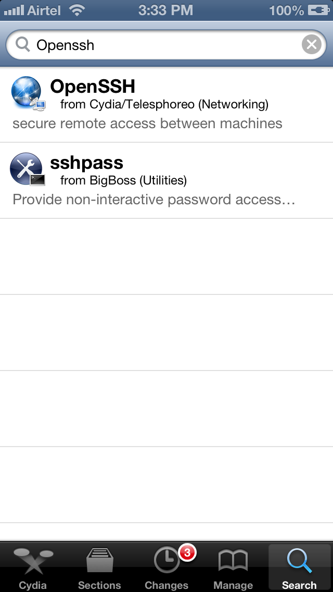
Tap on OpenSSH and on the next view tap on install. Tap on Confirm on the next view to confirm this action.
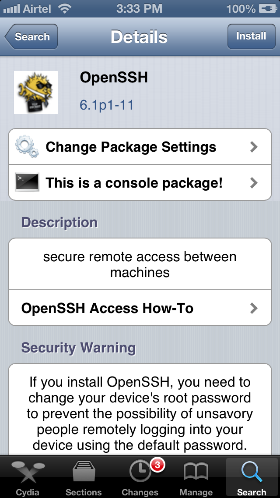
This will insall OpenSSH on your device.
Before we use ssh to log in to the device, we should install some other command line tools also. Almost all the popular hacker tools can be installed by using the BigBoss Recommended tools package which comes with a list of hacker tools. To install BigBoss Recommended tools just search for it in Cydia and tap on install.
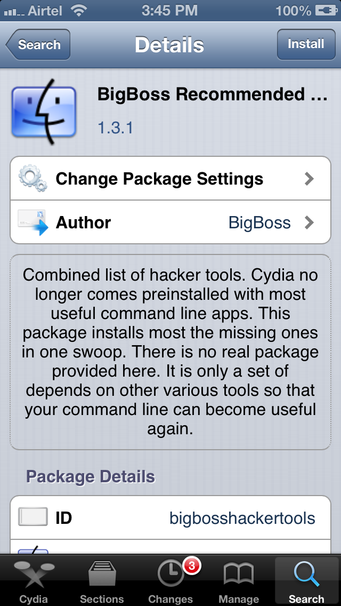
Some of the important command line tools that it installs are APT 0.6 Transitional, Git, GNU Debugger, less, make, unzip, wget and SQLite 3.x
One more thing that we can do is install MobileTerminal from Cydia. It allow you to run terminal commands on your device from your device rather than logging in via ssh from a different system. Again, downloading MobileTerminal on your device is as simple as searching for it in Cydia and tapping on Install
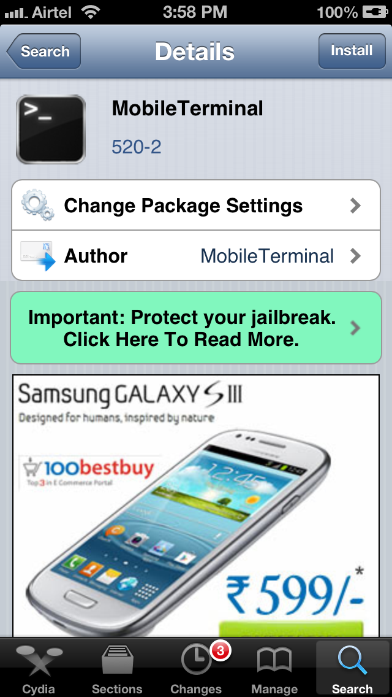
Once it is installed, you will see a new app icon with the name Terminal.
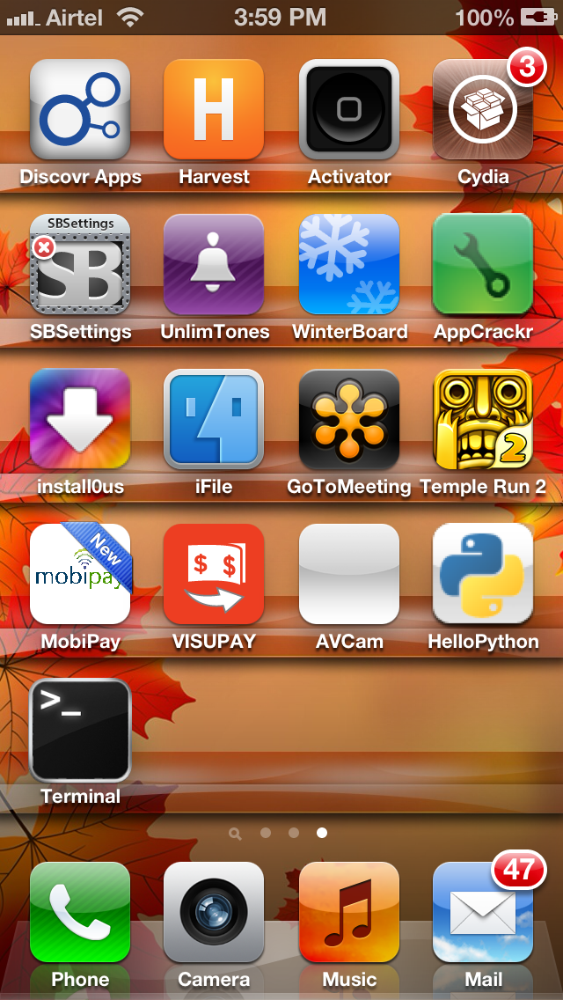
Tap on it, you will be given a terminal. Now try and run any Unix command on it. In this case, let me get a list of all the running processes by using the command ps
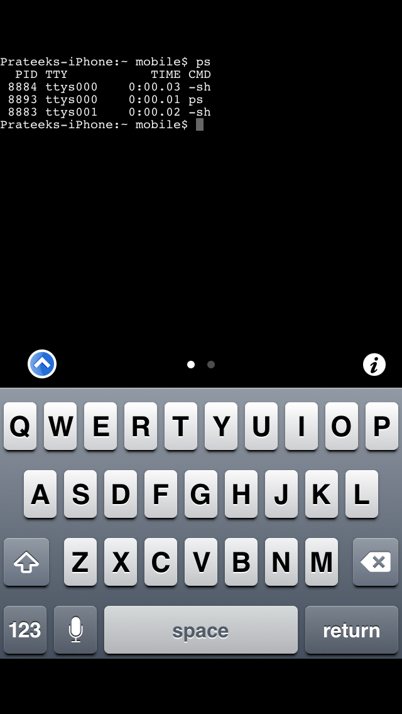
As you can see, it works!
Let’s see if we can login to our jailbroken device using ssh. Make sure your laptop and the device are connected to the same network and then find out the IP address of the device. To find out the IP address of your device, just go to Settings -> Wi-Fi and then click on the network your device is connected to.
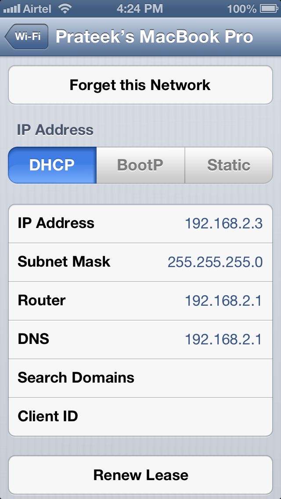
As we can see, the IP address is 192.168.2.3. Let’s ssh to it as the user root. Just type in the follwing command as shown below.The default password for the user root is alpine. It is recommended that you should change your password as soon as you have Open SSH installed. This is because there has been many malwares which log in to your device and steal information by using the default username/password combination. To change the password, just type in passwd and then type the new password twice. This will change the password for the user root.All of these steps have been perfomed in the image shown below.
Click to Enlarge
Note:Make sure the app Cydia is in the background while running any command that requires root privileges. This is because Cydia runs as root and hence it wouldn’t be possible to get a lock on a process which is already being used by Cydia.
Once this is done, do an apt-get update to get the latest packages lists.
Click to Enlarge
It wouldn’t be a bad idea to do an apt-get upgrade also. This will fetch the new versions of packages that are already existing on the machine and don’t have the latest version using the information contained from doing an apt-get update.
Click to Enlarge
The next thing to do is to install class-dump-z which we will be using to dump class information from an IOS application. To get the application, go to its official page and copy the link for the latest version. At the time of writing of this article, the latest version is 0.2a.
Click to Enlarge
Now, ssh into your device and fetch the file from that link using the command wget.
Click to Enlarge
Another option would have been to download file on your system and then upload it to your device using sftp. Once the download has finished, use the tar program to extract the archive.
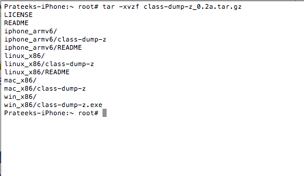
Once this is done, go inside the folder iphone_armv6 and copy the class-dump-zexecutable into /usr/bin directory. This will make sure you can run class-dump-z from anywhere on the device. Once you have copied the executable, just type class-dump-z. If you get the output as shown in the figure below, this means that class-dump-z has been successfully installed.
Click to Enlarge
Further Reading
There are not a lot of resources as far as IOS Security is concerned but here are some of the very good ones.
Conclusion
In this article, we learned how to setup a mobile auditing environment on a jailbroken device. In the next article we will look at how we can analyze applications for class information using class-dump-z.